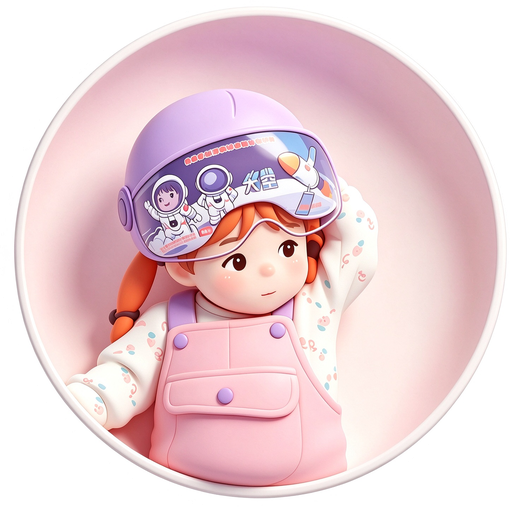

lobus · 独立作品 No.01
对自己，

◍
心愿 · 存钱 68%
✓
今天 · 已打卡
▤
记录 · 第 87 天
对自己，
好一点。
DearMe 把「想要的生活」拆成看得见的心愿、推得动的计划，和一天一天被你认真过掉的记录。没有催促，没有归零，没有失败。
它和别的 App 不一样的地方
不做任务系统，做陪伴。
效率工具让你完成它，陪伴让你想起自己。DearMe 的每一条规则，都在回答同一个问题：怎么让「想变好」这件事，不再变成新的压力。
01
不催你
一天最多一条提醒。连续几天没打开，它会安静下来，第七天才轻轻问一句「最近还好吗」。没有红点，没有感叹号。
02
记得你
心愿、里程碑、存下的每一笔钱、打过的每一次卡，都连在同一条时间线上。你随时能翻回去，看见自己是怎么走到这里的。
03
只属于你
没有账号，没有服务器，没有云端备份。照片不申请相册权限，所有内容只写在这台手机的本地沙盒里。
四个入口，一条主线
从「想要」到「做到」
想要的 → 做着的 → 做到的。这不是三个列表，是一件事的三个阶段。
一次完整的闭环
许一个愿，然后走完它
01
许下
写下想要的东西，选一个类型，可选地填上金额、期望日期、几个里程碑。
02
拆成计划
把它变成能做的事：每周存一笔、每月走一步、每天做一次。计划和心愿会互相回写进度。
03
打卡
今天这一格亮了，就留一张照片或一句话。错过也没关系，七天内可以补记。
04
纪念
点「我做到了」，会有一页只属于那件事的纪念。收下它，或者，再许一个。
“
我们不做任务系统。
任务系统让你完成它，
陪伴让你想起自己。
— RiverDriven，DearMe 唯一的开发者
“
灵感库 · 100 条
不知道许什么愿？看看这 100 条
60 条心愿、40 条计划，都是能直接写进 DearMe 的那一句话。挑一条，改成你自己的。
打开灵感库 →
60 心愿 · 40 计划 · 22 条依据
今天，对自己好一点。
iOS 17 起 · 数据全部留在本地 · 免费下载